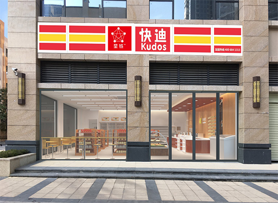

发展历程:
快迪以“特许加盟”为主要发展模式，继续以标准24小时便利店加盟作为主要发展方向，以“便利、亲切、优便利店加盟作为主要发展方向，以“便利、亲切、优便利店加盟作为主要发展方向，以“便利、亲切、优便利店加盟作为主要发展方向，以“便利、亲切、优共创双赢。
地方，突然冒出了3家店面形象统一，看上去有点类似于麦当劳、肯德基快餐店的店铺。这就是最早的快迪，里面经营的却是一些小到油盐酱醋、针头线脑，大到烟酒副食、日用百货的零售店。
地方，突然冒出了3家店面形象统一，看上去有点类似于麦当劳、肯德基快餐店的店铺。这就是最早的快迪，里面经营的却是一些小到油盐酱醋、针头线脑，大到烟酒副食、日用百货的零售店。
